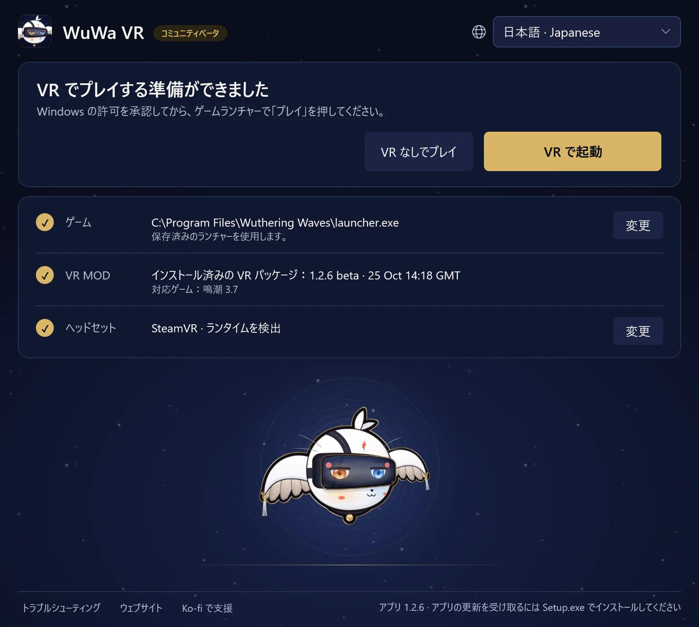

ガイド1.2.7 プレイヤーガイド · 鳴潮 3.8 · Windows PCVR
WuWa を VR でプレイ
WuWa-VR-Setup.exe をインストールし、WuWa VR のショートカットを開きます。Python を別途インストールする必要はありません。初回の VR パッケージのインストールにはインターネット接続が必要です。小さな Setup のダウンロードにランチャーアプリが含まれています。
インストールと起動
ランチャーは 1 画面です。見出しに次にすることが表示され、その下に VR で起動、VR なしでプレイ、そして ゲーム・VR MOD・ヘッドセット の 3 行があります。選択内容は記憶されるので、次回からはすぐに VR で起動 できます。
- ゲーム には見つかった Steam 版または公式 Kuro ランチャー版が表示されます。別のものにするには 変更 を使います。Steam の場合は、内側の Shipping 実行ファイルではなく
Wuthering Waves.exeを選びます。Epic はまだ対応していません。 - VR MOD にはインストール済みのパッケージと、その対象のゲームバージョンが表示されます。初回はアカウントのリスクに関する注意を読み、VR をインストール を選びます。パッケージはインストール前に検証され、インストールしてもゲームは起動しません。
- ヘッドセット には使用中の OpenXR ランタイムが表示されるので、先にヘッドセットのソフトウェアを起動してください。変更 を押すと ヘッドセットを使う と 同梱シミュレーターを使う（デスクトップでのプレビュー）が開きます。切り替えには Windows の許可が必要な場合があり、ゲームとそのインジェクターを閉じておく必要があります。ランチャーを開く、インストールする、更新すること自体で切り替わることはありません。
ランチャーアプリ はこのデスクトップウィンドウです。VR パッケージ は MOD とそのツールです。一方を更新しても、もう一方は自動的に更新されません。


VR で起動 を選びます。進むにつれて 4 つのステップが点灯します：許可（Windows の確認で「はい」を選ぶ）、プレイを押す（Kuro ランチャーで。Steam はゲームを自動で起動します）、VR 起動中（通常 1 分以内）、VR 中。
VR に入ると、ランチャーにこのウィンドウは閉じてかまいません。VR はそのまま続きます。と表示されます。VR の起動がいつもより遅い場合は、その旨と詳細が表示されます。待機をやめる は待機を取り消しますが、ゲームは閉じません。
VR なしでプレイ は、同じゲームを MOD なしで通常どおり起動します。
普段の操作方法
Xbox / XInput が通常のプレイ方法です。L3 / R3 は左 / 右スティックの押し込みを意味します。わからないときは？ L3、または LT + RT を 0.5 秒間押し続けます： 視界の下からカードが現れ、各ボタンの機能を示し、押すたびにそれぞれが点灯します。ショートカットの間は操作を離してください。下の表は、すべてのショートカットをカードと同じグループで示しています。

- LTポータルウィンドウ
- LBHUD／マウスモード
- View一人称視点
- 十字キー ↓一人称：全アニメーション
- RTジオラマ（10 倍）
- RBゲーム／固定カメラ
- Menuこのカードを開いたままにする
- Y/Xカメラの上下
- Bゲーム UI の表示切替
- A視点を再センター
- R3WuWa VR メニュー
ジェスチャー
- R3×2フリーカメラ
- L3×2スクリーンショット
- LT+RT→R3クリック：フル VR / 立体スクリーン
- LT+RT→R30.8 s長押し：モノシアターのオン／オフ
- LT+RT→L3クリック：ブラー オン／オフ
- LT+RT→Y押す：目の前のキャラクターを隠す
chronohaxx.github.io/wuwa-vr
PlayStation 対応は実験的です。
すべてのショートカット
L3 長押し
| L3+LT | ポータルウィンドウ |
|---|---|
| L3+LB | HUD／マウスモード |
| L3+View | 一人称視点 |
| L3+十字キー下 | 一人称：全アニメーション |
| L3+RT | ジオラマ（10 倍） |
| L3+RB | ゲーム／固定カメラ |
| L3+Menu | このカードを開いたままにする |
| L3+Y/X | カメラの上下 |
| L3+Y/X | ストーリーカメラ：近づく／下がる |
| L3+Y+X | Y + X 同時押し：デフォルトに戻す |
| L3+B | ゲーム UI の表示切替 |
| L3+A | 視点を再センター |
| L3+R3 | WuWa VR メニュー |
| R3×2 | フリーカメラ |
| L3×2 | スクリーンショット |
LT + RT 長押し
| LT+RT→R3 | クリック：フル VR / 立体スクリーン |
|---|---|
| LT+RT→R30.8 s | 長押し：モノシアターのオン／オフ |
| LT+RT→L3 | クリック：ブラー オン／オフ |
| LT+RT→L30.8 s | 立体スクリーンの切替（0.8 秒長押し） |
| LT+RT→Y | 押す：目の前のキャラクターを隠す |
カメラ
| LB+LT/RT | 固定：遠く／近く |
|---|---|
| RB 長押し | Polar 歩行中は全速 |
| フリーカメラ中 R3×2 | |
| 左／右スティック | 自由カメラ：移動／見回す |
| LT/LB | 自由カメラ：上昇／下降 |
| RT／RT を２回 | 自由カメラ：加速／ターボ |
メニュー & HUD
| LB+R3 | V を 1 回、0.8 秒長押しで Tab ホイール |
|---|---|
| HUD／マウスモード中 L3+LB | |
| 左スティック | カーソル移動 |
| A/B | クリック／戻る |
| X＋左スティック | スクロール |
| 十字キー | マップ移動 |
| LT/RT | HUD を近く／遠くへ |
| LB/RB | HUD を下／上へ |
WUWA VR メニュー
| L3+R3 | WuWa VR メニューを開閉 |
|---|---|
| WuWa VR メニューを開いているとき L3+R3 | |
| 十字キー / A / B | 選択／決定／戻る |
| LB/RB | ページを変更 |
| Y | メニューを移動 |
キーボード & マウス
| VR キー | 1 の左のキーを押したまま、別のキーを押します |
|---|---|
| VR キー+1 | フル VR／立体スクリーン |
| VR キー+2 | モノシアター |
| VR キー+3 | ポータルウィンドウ |
| VR キー+4 | ジオラマ（10 倍） |
| VR キー+B | ぼかし（被写界深度） |
| VR キー+N | 目の前のキャラクターを隠す |
| VR キー+H | ゲーム UI の表示切替 |
| VR キー+R | 視点を再センター |
| VR キー+P | スクリーンショット |
| VR キー+F | 一人称視点 |
| VR キー+T | ゲーム／固定カメラ |
| VR キー+C | フリーカメラ |
| VR キー+G | 一人称：全アニメーション |
| VR キー+E/Q | カメラの上下 |
| VR キー+E+Q | E + Q 同時押し：デフォルトに戻す |
| VR キー+ホイール | 固定カメラを近く／遠くへ |
| VR キー+M | HUD／マウスモード |
| VR キー+K | このカードを開いたままにする |
| Insert | WuWa VR メニューを開閉 |
| フリーカメラ中 VR キー+C | |
| WASD/マウス | 自由カメラ：移動／見回す |
| スペース/Ctrl | 自由カメラ：上昇／下降 |
| Shift/Shift×2 | 自由カメラ：加速／ターボ |
キーボードとマウス：Insert でメニューを開閉します。フル VR では、ゲームのメニュー上でマウスの位置を矢印が示し、コントローラーを使うと消えます。ゲームが前面にある間、マウスはウィンドウ内に留まります。メニューの快適ページにあるマウスをゲームウィンドウ内に留めるでオフにできます。
PS4 / PS5：Steam Input や、その他正常に動作する Xbox / XInput 割り当てでも同じショートカットを使えます。Cross / Circle / Square / Triangle は A / B / X / Y、L1 / R1 は LB / RB、L2 / R2 は LT / RT、Share / Create は View、Options は Menu に対応します。実験的な Direct DualShock 4 と DualSense の直接入力も、XInput パッドが有効でないときは動作しますが、ゲームが同じボタンに反応することがあります。詳しくは完全なリファレンスをご覧ください。
WuWa VR メニューのView ページには、視点・ブラー・クローズアップのオプションがあります。自動シネマティックスクリーンはオンです：ストーリー動画はモノシアターに、ストーリーの絵は立体スクリーンに切り替わり、その後元の視点に戻ります。会話は選んだ視点のままです。視点のショートカットはいつでも使えます。
VR コントローラーでの歩行、ジオラマ、ハンドデモ（任意）
VR コントローラー（ホームと操作のページ）を使うと、Quest のコントローラーを Xbox パッドとして歩行や見物に使えます。起動するたびにオフの状態で始まります。左 Menu ボタンを 1 秒間押し続けるとオン／オフを切り替えられます（振動で確認できます）。短く押すとこれまで通り Start です。Menu ボタンがない場合（Index）は、オフの状態で両方のスティックを押し込んで 1 秒間保持します。VR コントローラー使用時は、カードにグリップ・トリガー・スティックの名前が表示されます。
Xbox / トレッドミルとの共有は記憶されます：両方同時（既定。トレッドミルの歩行が引き続き機能します）、最後に使った方を優先、VR のみのいずれかです。コントローラーのスロットは既定で自動：Reality Runner の仮想パッドなど、コントローラーがあるスロットを使います。どちらも WuWa VR メニューの操作ページにあり、トレッドミルランも同じページです。Reality Runner を開いていると、歩くとランが始まり、時間を計ってゲーム内のルートを保存します。詳しくは歩行のリファレンスをご覧ください。
ジオラマには Native Stereo が必要で、ワールドスケールに合わせて頭の動きが拡大されます。オフにすると通常のスケールに戻ります。カメラページのジオラマの倍率で大きさを設定できます（2× から 10×）。ハンド／指のデモは表示のみで、つかむ操作やジェスチャーはありません。
更新とロールバック
アプリの新しいバージョンがあると、ランチャーが知らせます。更新したら、何も動いていないときに再起動します。ゲームを閉じた状態でアプリを起動すると、同じゲームバージョン向けの新しい VR パッケージを自動でインストールします。それまでのパッケージもインストールされたまま残ります。トラブルシューティング → その他のオプション にはインストール済み・公開済みのバージョンと 更新を確認 があります。更新確認の失敗やキャッシュされた一覧は、パッケージが最新であることを意味しません。
このリリースは、アプリ 1.2.7 とパッケージ beta-1-2-7 の組み合わせで、WuWa 3.8 向けです。VR パッケージの更新を元に戻すには、ゲームを閉じてから トラブルシューティング → その他のオプション の 以前のインストール済みバージョンを使う を使います。ランチャーアプリは元に戻りません。設定、バックアップ、録画は保持されます。
アプリの更新がブロックされている場合は、最新の ウェブサイトのセットアップ を使用します。再インストールしても停止したバックグラウンド処理は止まりません。先に以下の復旧手順を使用してください。
ポータブル版の代替手段
対応するリリース から WuWa-VR-Launcher.zip をダウンロードし、すべてを展開して WuWa VR Launcher.exe を開きます。フォルダーはまとめて保持してください。これは別の Web ツールのインターフェースを開きます。インストール済みのデスクトップアプリは更新されません。
問題が起きたとき
ランチャーの下部にある トラブルシューティング を開き、上から順に修復を試してください。MOD のファイルを修復 は検証済みのコピーから MOD のファイルを入れ直し、設定はそのまま残します。MOD 設定をリセット は、あなたの設定をバックアップしてから、MOD の設定を出荷時の状態に戻します。問題レポートを保存 は、ログと設定を Windows のユーザー名を含めずに 1 つの zip にまとめてデスクトップに保存します。助けを求めるときに送ってください。
その他のオプション にはそれ以外の機能があります：コントローラーの確認、起動準備を確認、診断情報をコピー、設定フォルダーを開く、インストール済みのバージョン、停止しないランチャープロセス、アンインストールの準備。
- 起動が止まったとき：待機をやめる を使い、最大 4 秒待ちます。起動が止まったことをランチャーが確認できない場合は 停止しないランチャープロセス が表示されます。停止しないランチャープロセスを探す を選び、止めたいワーカーだけを選択してから 選択したものを停止 を確定します。あらかじめ選択されているものはありません。その後 接続を再試行 を選びます。
- 閉じられない：ランチャーだけを閉じますか？はウィンドウを閉じ、バックグラウンドの処理には手を付けません。復旧操作は WuWa、Steam、インジェクター、VR ランタイムを決して停止しません。
- コントローラーが見つからない：コントローラーの確認は、設定を変更せずに XInput スロットと HidHide の情報を読み取ります。スロットが接続中でも、ゲームがボタンを受け取っている証拠にはなりません。
- HUD やメニューの表示がおかしい：WuWa VR メニューの インターフェースページにHUD レイアウトを更新があります。ESC を開いて閉じても HUD が再配置されます。HUD とメニューは通常のゲームと同じ 16:9 レイアウトです。同じページの16:9 UI レイアウトで以前の縦長レイアウトに切り替えられます。L3 + B で非表示のゲーム UI が再び表示されます。
- メニューが見つからない：メニューの設定に関係なく、Ctrl+Shift+Home で WuWa VR メニュー、Ctrl+Shift+End でクラシック UEVR ウィンドウが開きます。
- 問題の報告：WuWa VR メニューの録画ページで何が起きたかを選び、レポートを保存を選びます。ランチャーでは問題レポートを保存を使います。アプリと VR パッケージのバージョン、起きたこと、可能なら録画を含め、Issue に添付してください。
ダウンロード済みバージョンの削除またはアンインストール
トラブルシューティング → その他のオプション → アンインストールの準備 は、まず UEVR の設定を MOD 導入前の状態に戻し（MOD の設定は先にバックアップされます）、確認後、何も動いていないときに検証済みのダウンロードを削除します。その後、Windows の設定 → アプリでアプリをアンインストールします。ゲーム、バックアップ、録画、使用中の OpenXR パッケージ、使用中または未検証のファイルは残ります。再インストールしても、止まったバックグラウンドのワーカーは停止しません。
録画と現在の制限
録画の開始と停止は、WuWa VR メニュー（動画を録画）または トラブルシューティング → その他のオプション の 開発者ツール から行えます。録画は SteamVR と同梱シミュレーターに対応し、VDXR には対応していません。SteamVR ではゲームの音とマイクも録音できます。録画中はプレイヤー ID が覆われます。共有する前に、動画に名前やアカウント情報が映っていないか確認してください。詳しくはフィードバックガイドをご覧ください。
このリリースでテストされた内容と既知の制限は、リリースノートに記載されています。既知の問題には、フル VR でクエストマーカーが目標より少し下に表示されること、キャラクター画面のアイコンが平たく見えること（床の反射を更新し続けるため縦長レイアウトを使います）、動くフラットメニューの背景、シーンや会話の長い停止などがあります。モノシアターは一部のメニューやカットシーンに役立ちます。